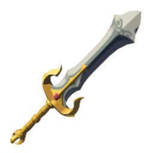
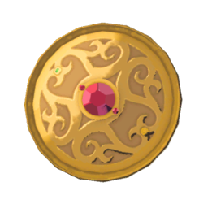
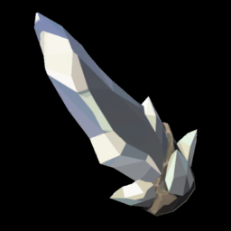
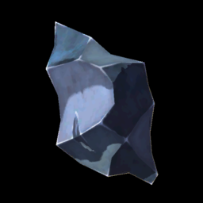
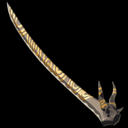
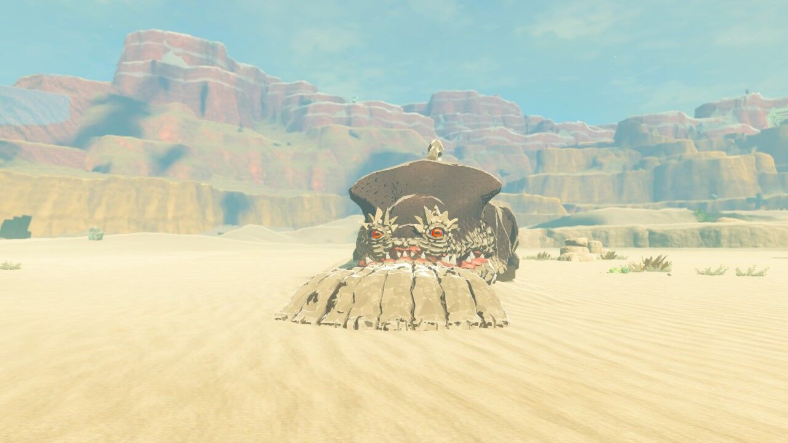
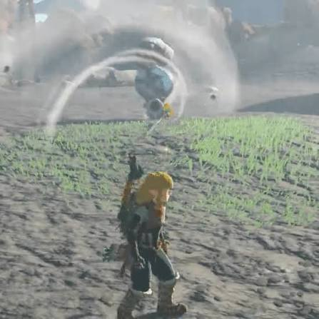

在《塞尔达传说：王国之泪》中，因为"余料建造"玩法的加入，武器系统迎来了大洗牌。很多萌新可能会盲目追求面板攻击力极高的"近卫双手剑"，但老司机都知道，近卫双手剑那是留给"人马搓背"专用的。如果论日常跑图、越级打怪、砍树割草、持久输出的综合性价比之王，那绝对非乌尔波扎的遗物——「七宝匕首」莫属！今天这篇硬核图文攻略，就手把手带你把这把"海拉鲁续航流天花板"做出来！
一、为什么七宝匕首是当之无愧的"日常战神"？
普通的格鲁德武器虽然也有"强力组合"词条（让装上去的材料攻击力翻倍），但是有一个致命的负面 BUFF——掉耐久掉得极快，砍两下就碎了。然而，作为英杰武器的「七宝匕首」却完美避开了这个坑！
它不仅拥有【强力组合】词条，而且完全不扣除基础耐久！基础耐久高达60点，不仅面板攻击高，而且极其耐操，是全游戏最完美的单手剑胚子。
- 基础攻击力：28点
- 武器特效【强力组合】：附加的余料攻击力直接翻倍！
- 终极形态面板：28 + (55 × 2) = 138点——单手剑攻速极快，一秒万伤不是梦！

二、合成神兵需要哪些原材料？
想要获得七宝匕首，我们需要走一趟格鲁德小镇（女儿国）完成特定任务，并准备好以下"重工业材料"：





（余料建造用，攻击力+55）
三、详细获取与合成步骤（手把手保姆级教学）
首先必须通关主线任务【格鲁德小镇的雷之神殿】，帮露珠女王解决木乃伊危机。随后前往格鲁德小镇的珠宝店，接取支线任务【行踪不定的老板】。带上几支炸弹箭，前往小镇西边的卢玛琳沙地，把"莫尔德拉吉克"（沙兽）干掉，救出珠宝店老板。回到小镇，找工匠玛卡利萨对话，正式开启英杰武器铸造服务。

把准备好的1把格鲁德之剑、1面格鲁德盾、4颗钻石和10个打火石拍在工匠桌上。一阵密集的打铁声后，基础面板28攻击力的【七宝匕首】正式入手！
此时的七宝匕首还只是个半成品。立刻把【白银人马的刃角】（攻击力+55）丢在地上，开启林克的【余料建造】技能，对准人马角狠狠一吸！伴随着清脆特效音，七宝匕首面板将瞬间飙升至138点！
独家秘笈：七宝匕首快碎了怎么办？（无限续航流）
这个方法利用普通武器可以被章鱼修复的特性，把七宝匕首伪装成"配件"一起打包修复。请务必严格按顺序操作，步骤错一步可能导致武器损毁！
如果七宝匕首上已经粘了白银人马的刃角，直接修复会将其覆盖。建议先去塔尔里镇（一卡拉村）找小鼓隆族NPC帕黎恩，花20卢比把材料完好地拆下来放进背包。
装备一把普通武器在手（旅人剑、骑士盾等）。把红血快碎的七宝匕首丢在地上，使用"余料建造"技能，将七宝匕首作为配件粘在普通武器上。
带着组合好的"连体武器"前往死亡山脉寻找岩石章鱼。把武器丢在它面前，等它吸入并冒出亮晶晶修复特效后，在它吐出来时立刻捡起。此时，基础武器和上面的七宝匕首会同时回满耐久！

再次回到塔尔里镇找帕黎恩，花20卢比把修复好的组合武器拆开。你会得到一把全新满耐久七宝匕首！最后把之前拆下来的人马角重新合上去即可。